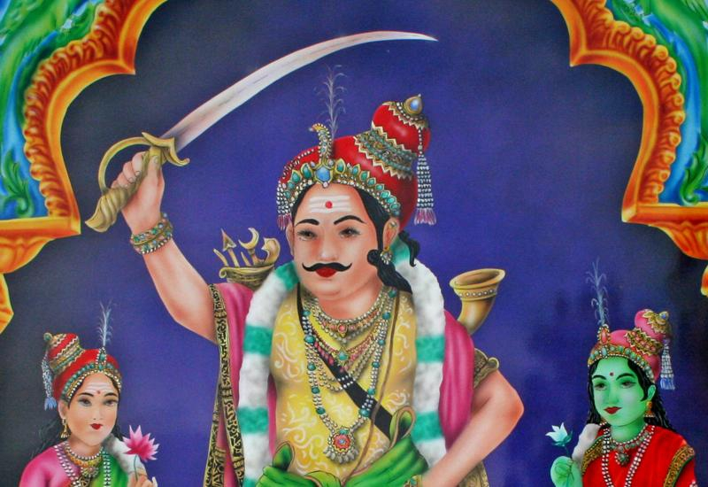

Maldévilin, dieu masculin carnivore, ancien combattant légendaire, qui est vénéré aux Antilles comme le gardien des temples et haut protecteur de Maliémin est toujours représenté de façon virile, sous la forme d’un guerrier redoutable monté sur un cheval, avec sa forte moustache, armé d’un coutelas, et en tant que puissant pourfendeur des esprits maléfiques.
Aux Antilles il est toujours représenté auprès de ses deux femmes, Bomi et Vèllèaman. Le temple de Change à Capesterre-Belle Eau en Guadeloupe lui est consacré.
